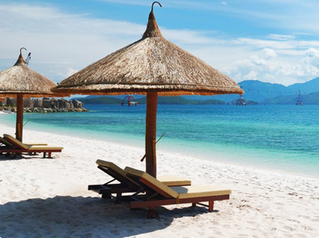

Hello! My name is Nejla. I am a student based in Sarajevo. I have a passion for coding, exploring new technologies, and sharing my knowledge with others. In my free time, I enjoy various hobbies that help me relax and recharge.
My Hobbies
Coding: I love diving into programming projects, whether it's building web applications, exploring machine learning algorithms, or contributing to open-source projects.
Hiking: Exploring nature trails and hiking to scenic viewpoints is one of my favorite ways to unwind on weekends. I enjoy the peace and tranquility of the great outdoors.
Photography: Capturing moments and scenes through photography is another hobby I'm passionate about. Whether it's landscapes, portraits, or street photography, I love the creative process behind it.
Reading: I'm an avid reader, and I enjoy delving into a variety of genres, from science fiction and fantasy to non-fiction and biographies. Curling up with a good book is one of life's simple pleasures for me.
Travel:Another thing I really love to do is travel. I enjoy visiting exotic places.

My experience
One of the most beautiful trips is a trip to Alanya, a popular summer resort on the Turkish Riviera, offering a rich experience that combines beautiful Mediterranean beaches, rich history and culture, the pursuit of modern comfort and traditional Turkish atmosphere. Visitors can enjoy a wide range of activities, including exploring ancient ruins, enjoying Turkish cuisine, exciting water sports and relaxing on sunny beaches. Alanya is known for its distinctive rock fortress that offers spectacular views of the surrounding landscape and the sunset, adding unforgettable moments to a trip to this colorful Turkish city.